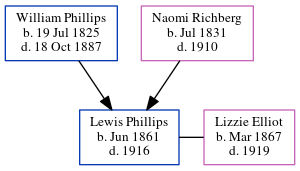

Lewis W Phillips 1861 - 1916
[ Home ] | [ Calendar ] | [ Surnames Index ] | [ Census Index ] | [ Family History ]The child of William Phillips (a virginia phillips said that he was a carpenter and contractor. he built grady hospital in atlanta. he also worked on the masonic temple in atlanta. the 1850 census confirms he was a carpenter) and Naomi Richberg, Lewis Phillips, the great-great-uncle of Michele Copp (née Phillips), was born in South Carolina, USA in Jun 18611,2,3,4,5. He and married Lizzie Elliot in Fulton, Georgia, USA on Oct 11, 18886.
During his life, he was living in Sumter, Sumter, South Carolina in 18701 and in 18802 (the same place as his parents had been living in 1870); in Atlanta Ward 1, Fulton, Georgia in 19003; in Atlanta Ward 3, Fulton, Georgia in 19104; and in Atlanta, Georgia, USA in 19147.
He died in 1916 in Atlanta, Fulton County, Georgia5 and was buried there after 19165.
Parents
- William Hiram was born on Jul 19, 1825
- Naomi C was born in Jul 1831
Citations
- 1870 United States Federal Census Online publication - Provo, UT, USA: The Generations Network, Inc., 2003.Original data - 1870. United States. Ninth Census of the United States, 1870. Washington, D.C. National Archives and Records Administration. M593, RG29, 1,761 rolls. Minnesota. Minnes (Residence Post Office: Sumter)
- 1880 United States Federal Census Online publication - Provo, UT, USA: The Generations Network, Inc., 2005. 1880 U.S. Census Index provided by The Church of Jesus Christ of Latter-day Saints © Copyright 1999 Intellectual Reserve, Inc. All rights reserved. All use is subject to the limite
- 1900 United States Federal Census Online publication - Provo, UT, USA: MyFamily.com, Inc., 2004.Original data - United States of America, Bureau of the Census. Twelfth Census of the United States, 1900. Washington, D.C.: National Archives and Records Administration, 1900. T623, 1854 rolls.
- 1910 United States Federal Census Online publication - Provo, UT, USA: The Generations Network, Inc., 2006. For details on the contents of the film numbers, visit the following NARA web page: NARA.Original data - United States of America, Bureau of the Census. Thirteenth Census of the Unit
- U.S., Find A Grave Index, 1600s-Current Ancestry.com Operations, Inc.
- Georgia, Marriage Records From Select Counties, 1828-1978 Ancestry.com Operations, Inc.
- U.S. City Directories, 1822-1995 Ancestry.com Operations, Inc.
Family Tree
Generated by ged2site. Last updated on Jun 6, 2024